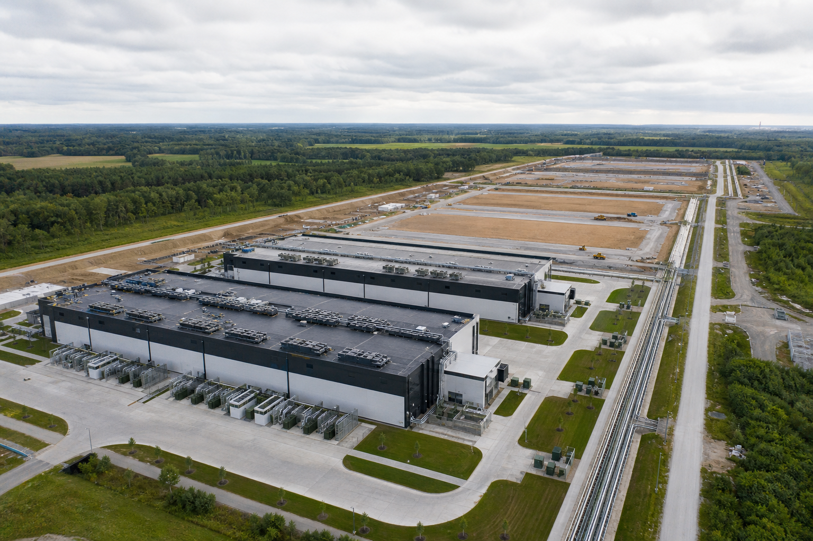

Phase the Campus Around Power, Not Predictions

AI demand forecasts move quickly, but substations, transmission upgrades, and major equipment do not. A campus plan built around one perfect forecast can either strand capital or run out of capacity. Phasing provides a more practical connection between uncertain demand and physical infrastructure.
Separate the Master Plan From the First Build
The master plan should protect the full development opportunity: utility corridors, equipment yards, cooling routes, roads, drainage, and expansion zones. The first build only needs to deliver the capacity that can be energized and used within a credible schedule.
Create Repeatable Capacity Blocks
Standard electrical and mechanical blocks make growth easier to plan, procure, and commission. Each phase can use a known design while still adapting to new hardware. Repeatability also improves cost visibility and lets project teams carry lessons forward.
Align Milestones With Power Delivery
Utility upgrades often arrive in steps. Infrastructure phases should match those steps so completed facilities do not sit idle waiting for energy. Temporary or alternate sources may support specific needs, but they should fit a clear long-term topology rather than create a permanent workaround.
Preserve Optionality
Reserved connection points, expandable controls, spare protection capacity, and accessible routing make future phases less disruptive. The goal is to prepare for growth without purchasing every component before demand is proven.
The Bottom Line
A phased campus can move early, learn from operations, and expand as power and demand become real. That flexibility is increasingly valuable in a market where compute changes faster than construction.